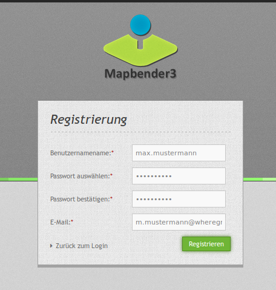
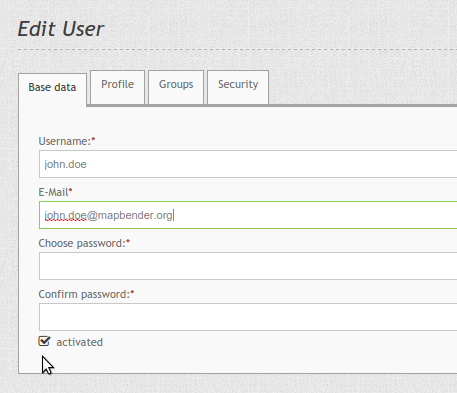
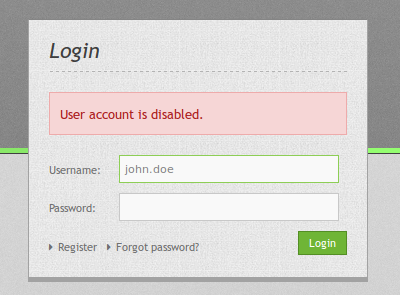
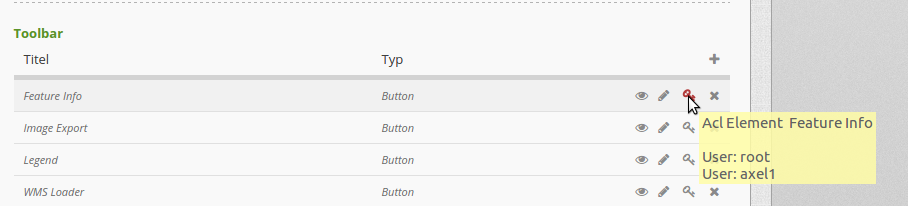

Users¶
User are implemented as FOM\UserBundle\Entity\User and stored in the database. The entity has only some basic information about the user itself, more complex user data will have to be implemented by user profiles (yet to be done).
The bundles provides all means to administrate users by admin as well as self- registration and password recovery.
The user with the id 1 is special, as this user is created during installation and will always be given full access. If all is lost, you can use this user to manage everything. And in the event that the credentials for this user are also lost, a console command (fom:user:resetroot) is available for resetting.
Forgot Password¶
If a user has forgot his/her password, he can use the “Forgot password?” link in the Login-screen to request a new one. For that he types in his username or e-mail-adress.

After that he gets an e-mail with a link, which leads him to a site where he can reset his password. The link isn’t valid anymore after this operation. The text of the mail can be customized in the /FOM/UserBundle/Resources/translations/messages.en.xlf file.
The functionality can be switched off in the config.yml.
fom_user:
reset_password: true # true/false
Registering¶
Users can selfregister themselves in Mapbender3. For this you have to adjust the setting fom_user:selfregister in the config.yml to true.
fom_user:
selfregister: false # true/false
The Login-dialog contains a “Register” link. This openes a page where the user can type in his/her name, password and e-mail adresss.
After that he gets a confirmation mail to complete the registration. Until that time he is only managed as inactive user in Mapbender3.
The text of the confirmation mail can be customized in the /FOM/UserBundle/Resources/translations/messages.en.xlf file.
Activation of users¶
Since Mapbender 3.0.5.3. Users can be set activated or deactivated by Administrators with the User-ACL-right of at least “edit”. For this purpose, a checkbox exists in the Edit User dialog.
A user with administration rights cannot activate or deactivate himself.
A user who is deactivated cannot login into Mapbender3 anymore until he gets activated again.
Users which have self-registered themselves but have not approved the activation mail can now be activated by an administrator.
Managing users with the security key feature¶
Inside every Mapbender application, there is a possibility to adjust the rights of certain users and maintain visibility of what they are allowed to do. You can set these preferences in the “Layouts”-tab.
Next to every element is a security key. If you click on the key, you can adjust the certain rights of each user. Just add users who should gain access to the element with the “+” symbol in the pop-up window. A set checkmark next to the user account provides the essential rights for the respective user.
After setting specific access rights, the security key turns red. If you hover over the key with the cursor, you will see the names of the users who have rights to the element.
Login Failures¶
Login failures are responded with the Message “Bad credentials”. For security reasons it is not shown if the error is is based on a wrong username or a wrong password. Login failures will not lock the account indefinately after four attempts. Rather the account will be locked for a given period of time.
The config.yml allows to adjust the behaviour:
fom_user:
# Allow to create user log table on the fly if the table doesn't exits.
# Default: true
auto_create_log_table: true
# Time between to check login tries
login_check_log_time: "-5 minutes"
# Login attemps before delay starts
login_attempts_before_delay: 3
# Login delay after all attemps are failed
login_delay_after_fail: 2 # Seconds
- auto_create_log_table: Backwards compatibility parameter (default: true).
- login_check_log_time: Cleaning of the login-failure table (default: -5 minutes)
- login_attempts_before_delay: Number of login failures before the login delay starts (default: 3)
- login_delay_after_fail: Number of seconds of the login-delay (default: 2).